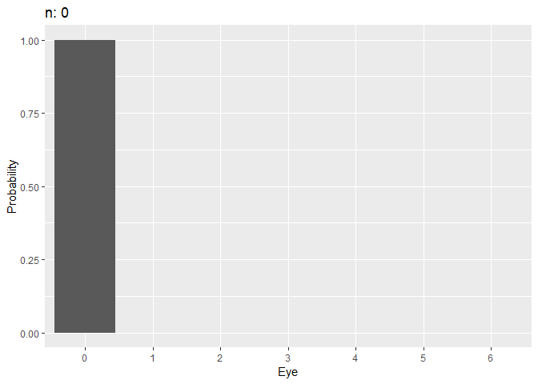

The following external R packages are used:
library(dplyr)
library(gganimate)
gather <- tidyr::gather1. Introduction
This is to illustrate changes in marginal probabilities of the “largest value until the current die roll” Markov chain 1 using gganimate package.
2. The largest roll until now
Say you’re rolling a fair six-sided die. Let \(X_0\) be \(0\), and \(X_n\) be the largest value that appears among all of the rolls up to time \(n \geq 1 \text{ }\)1. Clearly, the state space is \(S = \{0, 1, 2, 3, 4, 5, 6 \}\) with initial probabilities \(v_0 = P(X_0 = 0) = 1\), \(v_s = 0\) for all \(s \in S - \{ 0 \}\), and: \[p_{0j} = P(X_{n} = j \text{ | } X_{n - 1} = 0) = \frac{1}{6} \text{ } \forall j \in S - \{ 0\}\]
One fact you can see is that \(X_n\) never decreases by definition, i.e. \(X_{n - 1} \leq X_n\) for \(n \geq 1\). And since we are tossing a fair die, the marginal probability of seeing either side is the same across all sides. So, for example, if \(X_n\) is \(4\), and \(Y_{n + 1}\) is the value that appears at the \((n + 1)\)th roll, then since \(P(Y_{n + 1} = i) = \frac{1}{6}\) for all \(i \in S - \{ 0 \}\), we obtain:
\[\begin{align*} p_{44} &= P(X_{n + 1} = 4 \text{ | } X_n = 4) = P(Y_{n + 1} \leq 4) = \frac{4}{6} \\ p_{45} &= P(X_{n + 1} = 5 \text{ | } X_n = 4) = P(Y_{n + 1} = 5) = \frac{1}{6} \\ &= p_{46} \end{align*}\]That is, if \(1, 2, 3,\) or \(4\) shows up at the \((n + 1)\)th roll, then the current maximum \(X_{n + 1}\) is still \(4\). Using the same argument for all \(i, j \in S\), we get: \[p_{ij} = \begin{cases} \frac{j}{6} & i = j \\ \frac{1}{6} & i < j \\ 0 & i > j \end{cases}\]
Say \(P_{7 \times 7}\) is the matrix of transition probabilities. Then it should be: \[P_{7 \times 7} = \big[p_{ij} \big]_{i = 0:6, j = 0:6}= \begin{bmatrix} 0 & \frac{1}{6} & \frac{1}{6} & \frac{1}{6} & \frac{1}{6} & \frac{1}{6} & \frac{1}{6} \\ 0 & \frac{1}{6} & \frac{1}{6} & \frac{1}{6} & \frac{1}{6} & \frac{1}{6} & \frac{1}{6} \\ 0 & 0 & \frac{2}{6} & \frac{1}{6} & \frac{1}{6} & \frac{1}{6} & \frac{1}{6} \\ 0 & 0 & 0 & \frac{3}{6} & \frac{1}{6} & \frac{1}{6} & \frac{1}{6} \\ 0 & 0 & 0 & 0 & \frac{4}{6} & \frac{1}{6}& \frac{1}{6} \\ 0 & 0 & 0 & 0 & 0 & \frac{5}{6} & \frac{1}{6} \\ 0 & 0 & 0 & 0 & 0 & 0 & 1 \end{bmatrix}\]
My goal is to visualize the change in marginal probabilities \(P(X_n = i)\), \(i \in S\), as \(n \to \infty\). I will define \(P\)-matrix, and set 50 as the maximum \(n\):
# Settings
max_n <- 50
v <- c(1, rep(0, 6)) # initial probabilities v_0, v_1, ..., v_6
# P matrix
P <- diag(0:6)
for (i in 1:7) {
for (j in 1:7) {
if (i < j) {
P[i, j] <- 1
}
}
}
(P <- P / 6)## [,1] [,2] [,3] [,4] [,5] [,6] [,7]
## [1,] 0 0.1666667 0.1666667 0.1666667 0.1666667 0.1666667 0.1666667
## [2,] 0 0.1666667 0.1666667 0.1666667 0.1666667 0.1666667 0.1666667
## [3,] 0 0.0000000 0.3333333 0.1666667 0.1666667 0.1666667 0.1666667
## [4,] 0 0.0000000 0.0000000 0.5000000 0.1666667 0.1666667 0.1666667
## [5,] 0 0.0000000 0.0000000 0.0000000 0.6666667 0.1666667 0.1666667
## [6,] 0 0.0000000 0.0000000 0.0000000 0.0000000 0.8333333 0.1666667
## [7,] 0 0.0000000 0.0000000 0.0000000 0.0000000 0.0000000 1.0000000Say \(P^k = P^{(k)}\) stores \(p_{ij}^{(k)} = P(X_{n + k} = j \text{ | } X_n = i)\), i.e. the probability that \(j\) will be the maximum after throwing a die exactly \(k\) times given the current maximum of \(i\). Also, say \(\mu_k\) is the (row) vector of all \(P(X_k = i)\)’s, \(i \in S\). Then given a vector of initial probabilities \(v = \begin{bmatrix} v_0 & v_1 & \dots & v_6 \end{bmatrix}_{1 \times 7}\): \[\mu_k = v P^k\]
Pk <- function(P, k) {
# P: a numeric matrix
# k: a natural number
lst_k <- vector('list', k)
for (i in 1:k) {
lst_k[[i]] <- P
}
Reduce('%*%', lst_k)
}
mu_k <- function(v, P, k) {t(v) %*% Pk(P, k)}Each row of mu_collection consists of \(n\) and \(\mu_n\), in this order, \(n = 0, 1, \dots, 50\):
(mu_collection <-
t(sapply(1:max_n, function(k){mu_k(v, P, k)})) %>%
rbind(v, .) %>%
cbind(0:max_n, .) %>%
'colnames<-'(c('n', 0:6)) %>%
as_tibble())It makes sense to see \(P(X_n = 6) \to 1\) as \(n\) increases. Now we should manipulate mu_collection so that it is ready for plotting a barplot of marginal probabilities at each \(n\):
mu_tidy <- mu_collection %>% gather(key, value, -n)And here’s how marginal probabilities evolve as \(n \to \infty\):
anim <- ggplot(mu_tidy, aes(x = key, y = value)) +
geom_bar(stat = "identity") +
labs(x = 'Eye', y = 'Probability', title = "n: {closest_state}") +
transition_states(n) +
enter_fade() +
exit_fade()
animate(
anim,
fps = 30, duration = 30,
start_pause = 5,
end_pause = 5
)
Indeed, \(P(X_n = 6) \stackrel{p}{\to} 1\).
Session info
R session info:
sessionInfo()## R version 3.6.0 (2019-04-26)
## Platform: x86_64-w64-mingw32/x64 (64-bit)
## Running under: Windows 10 x64 (build 17763)
##
## Matrix products: default
##
## locale:
## [1] LC_COLLATE=English_Canada.1252 LC_CTYPE=English_Canada.1252
## [3] LC_MONETARY=English_Canada.1252 LC_NUMERIC=C
## [5] LC_TIME=English_Canada.1252
##
## attached base packages:
## [1] stats graphics grDevices utils datasets methods base
##
## other attached packages:
## [1] gganimate_1.0.3 ggplot2_3.1.1 dplyr_0.8.1
##
## loaded via a namespace (and not attached):
## [1] Rcpp_1.0.1 pillar_1.4.0 compiler_3.6.0
## [4] plyr_1.8.4 prettyunits_1.0.2 prettydoc_0.2.1
## [7] tools_3.6.0 progress_1.2.2 digest_0.6.18
## [10] jsonlite_1.6 evaluate_0.13 tibble_2.1.1
## [13] gtable_0.3.0 pkgconfig_2.0.2 rlang_0.3.4
## [16] yaml_2.2.0 xfun_0.7 withr_2.1.2
## [19] stringr_1.4.0 knitr_1.23 hms_0.4.2
## [22] grid_3.6.0 tidyselect_0.2.5 glue_1.3.1
## [25] R6_2.4.0 rmarkdown_1.12 purrr_0.3.2
## [28] tweenr_1.0.1 farver_1.1.0 tidyr_0.8.3
## [31] magrittr_1.5 scales_1.0.0 htmltools_0.3.6
## [34] assertthat_0.2.1 colorspace_1.4-1 stringi_1.4.3
## [37] lazyeval_0.2.2 munsell_0.5.0 crayon_1.3.4Rosenthal, J. (2019, April 05). STA447/2006 (Stochastic Processes) Lecture Notes, Winter 2019. Retrieved May 23, 2019, from http://probability.ca/jeff/teaching/1819/sta447/notes.pdf↩